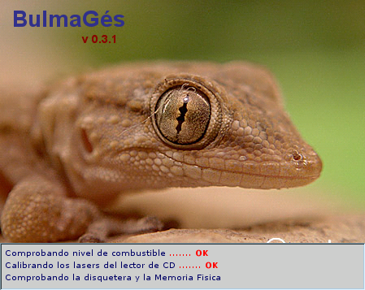
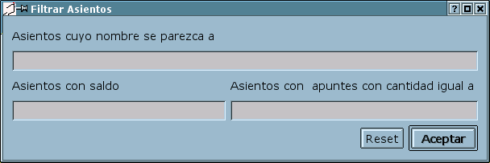
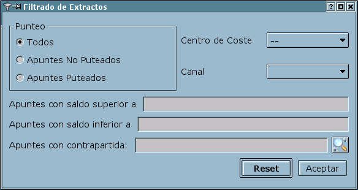
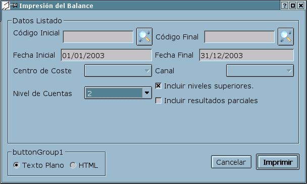
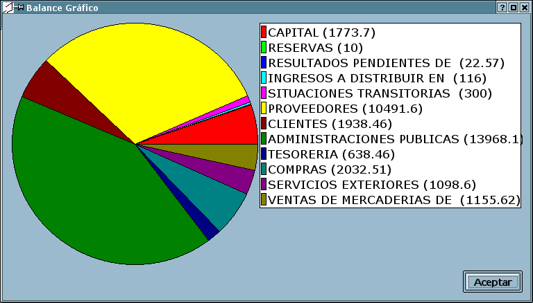

MANUAL DEL PROGRAMA BULMAGES
Julio-Agosto 2003 (C) Cristina Marco Hernandez
INTRODUCCIÓN
Hace algunos millones de años empezó la vida en la tierra,
pero no creo que debamos retroceder tanto en el tiempo para explicar los
orígenes de este programa.
En los meses de Junio, Julio del 2001 surgió en la lista de distribución
de Bulma, la idea de realizar programas de gestión para empresas.
El objetivo era claro, hacer posible el uso de Linux en el dia a dia de
una empresa. Para ello es preciso que las empresas cuenten con software
de calidad que les permita abordar todas las tareas que ya tienen informatizadas.
Luego, con el tiempo fue escogido como primer candidato a ser implementado
una contabilidad por los siguientes motivos:
Es un programa aislado, que sólo influye a un departamento,
no es vital para el funcionamiento de la empresa, no es necesario migrar
todo el parque informático de la empresa para utilizar BulmaGes,
basta con un ordenador
Los requisitos para un programa contable estan bien definidos y son
prácticamente los mismos para cualquier empresa, con lo que el
programa seria mayormente utilizado que cualquier otro candidato.
No existia ningún programa que atacase a la contabilidad, aun
hoy dia existen muy pocas alternativas reales. Y la mayoria de los proyectos
dedicados a ello han quedado olvidados.
Tras dos años de aparente inmovilidad del proyecto, por fin, en
Noviemgre de 2002 se empezó la codificación del programa.
INSTALACIÓN DE BULMAGES
A.- Instalación Rápida
El primer paso para instalar un programa es descargarlo, puede obtener
un archivo tgz con todos los archivos necearios para el programa en
http://bulmages.bulma.net
Descomprimir
el archivo tgz en un directorio
Ejecutar
como root el script de instalación install-bulmages
Asegurarse de que el directorio /usr/local/bin se encuentra en el path.
Para arrancar el programa basta con escribir bulmages.
Requisitos del programa:
Para el correcto funcionamiento del programa se requiere:
postgresql
kde3.x
libpq
Nota:
Revise el apartado de Configuración del motor
de bases de datos PostgreSQL de esta misma sección para
comprobar que tiene las bases de datos correctamente instaladas.
B.- Instalación Manual
Vamos a intentar detallar todos los requisitos necesarios para
poner en funcionamiento el programa, sin tener que hacer uso del script de instalación.
De esta forma entenderemos mejor los componentes del programa.
Esta instalación es algo más laboriosa pero permite tener mayor
control sobre los componentes de la aplicación. No es preciso ejecutar
el script de instalación installbulmages para que funcione, pero si es
preciso tener acceso de root en la máquina en la que vayamos a instalar.
B1.- Instalación de los servicios.
Supondremos que tenemos el
servidor de postgresql instalado y correctamente configurado. Para
instalar las bases de datos requeridas para que funcione
Bulmagés podemos acceder al directorio dbmodels y buscar en ella
tres archivos de bases de datos (pgdump).
Si nuestro usuario no esta dado de alta en postgres podemos hacerlo
mediante el comando (supondremos que el usuario tborras no tiene
permisos para acceder a bases de datos de postgres):
/root/:# su postgres
/home/postgres:$ createuser tborras
El primer comando hace que el sistema entre en la cuenta de
superusuario de postgres, de esta forma podemos ejecutar comandos en la
base de datos.
El segundo comando crea el usuario tborras, para que pueda acceder a la
base de datos.
Tras estos dos comandos se nos haran algunas preguntas sobre si
queremos que nuestro usuario pueda crear nuevas bases de datos
(Responderemos que SI).
Hecho esto ya podemos crear las bases de datos del programa mediante
los comandos:
/home/tborras:$ createdb bulmages
/home/tborras:$ createdb metabd
/home/tborras:$ createdb bgplangcont
Si todo ha funcionado bien el sistema nos devolverá el mensaje
CREATE DATABASE indicando que la base de datos ha sido creada
Luego podemos volcar los datos que se suministran con la instalacióndel
programa
/home/tborras:$ psql bulmages
< bulmages.pgdump
/home/tborras:$ psql metabd
< metabd.pgdump
/home/tborras:$ psql
bgplangcont < bgplangcont.pgdump
Estos comandos deben generar bastante salida en pantalla.
Si todo ha ido correctamente, y no ha salido ningun mensaje de error,
en el sistema estarán creadas las bases de datos que va a
utlizar el programa.
Si se ha producido algún error, o queremos volver a instalar
siempre podemos borrar la base de datos con el comando:
/home/tborras:$ dropdb bulmages
Lea el manual de referencia de postgreSQL para mayor información
sobre la administración de bases de datos.
B2.- Instalación del cliente de contabilidad
Para instalar el cliente
de contabilidad lo único que debemos hacer es copiar una serie
de archivos en determinadas ubicaciones.
copiar bulmages.conf en el directorio etc/
Este es el archivos de configuracion del programa y debe tener permisos
de lectura.
copiar bulmages, borraremp, cargaemp, guardaemp y nuevaemp en
/usr/local/bin
Estos archivos son los ejecutables y deben tener permisos de
ejecución., igualmente el directorio /usr/local/bin debe estar
en el PATH para que pueda ser ejecutado.
copiar el resto de archivos en /usr/share/bulmages
Estos archivos son archivos auxiliares del programa y deben tener
permisos de lectura.
Es posible que la parte cliente y la parte servidor estén
alojadas en distintas máquinas. Incluso puede tener varios
clientes atacando a una misma base de datos. Para hacerlo existen
dos parametros en el archivo /etc/bulmages.conf que indican a que
servidor de bases de datos debe atacar el programa.Estos parametros son
CONF_SERVIDOR y CONF_PUERTO donde se puede indicar a que servidor de
bases de datos y puerto de conexión hacer las peticiones de base
de datos.
C.- Configuración del motor de bases de datos
PostgreSQL:
La mayor complicación que puede surgir
con el programa es la correcta instalación de las bases de datos.
C1.-Permisos de los usuarios:
Postgres trabaja con varios métodos de
autentificación, estas opciones se configuran en el archivo
pg_hba.conf. Esta es la principal causa de problemas con el programa.
La opción de autentificación trust
permite que todos los usuarios tengan acceso a la base de datos con lo
que no habrá problemas de autentificación y todos los
usuarios podran utilizar sin restricciones las bases de datos. Asi que
si tenemos el tipo de acceso trust y las bases de datos de la
aplicación han sido creadas el programa funcionará sin
problemas.
La opción de autentificación ident
sameuser sólo permite que tengan acceso a la base de
datos aquellos usuarios que han sido creados previamente. Esta
opción es más segura ya que solo aquellos usuarios que
tengan cuenta en el ordenador tendran acceso a las bases de datos. Para
usar bulmages con este modelo de autentificación debemos
asegurarnos que los usuarios que van a usar el programa han sido dados
de alta en la base de datos. Para ello usaremos el comando
/home/postgres:$
create user xxxxxxxx
donde xxxxxxxxx es el login del usuario al que
queremos otorgar permisos de acceso a la base de datos.
EJECUCIÓN DEL PROGRAMA BULMAGES
Una
vez que el programa ha sido correctamente configurado, podemos pasar a
ejecutarlo.

El prgrama se ejecuta
mediante el comando bulmages. Una vez ejecutado
nos aparecera una pantalla de entrada donde podemos pulsar sobre la
empresa en la cual queremos trabajar y nos pedirá un login y un
password. Por defecto el programa tiene el usuario bulmages predefinido
y su password es bulmages.
PRIMEROS PASOS CON EL PROGRAMA
INTRODUCCIÓN
AL PROGRAMA
BulmaGes es un proyecto
dedicado a resolver la tarea de la contabilidad de empresa de una forma
sencilla y elegante y siempre bajo el punto de vista del Software Libre.
LA PANTALLA DE INICIO: ABRIR EMPRESA
La pantalla de INICIO
permite seleccionar la EMPRESA con la que se desee trabajar. Esta
pantalla incluye el nombre que se le haya proporcionado a la empresa,
el ejercicio al que se refiere y el nombre del archivo en el que se
guardarán los datos relativos al ejercicio en curso.
Para comenzar a utilizar
BULMAGES será necesario ABRIR una EMPRESA. Bulmages incluye por
defecto un plan contable estándar, una empresa de pruebas y la
configuración de un usuario "bulmages". Por lo tanto, para
acceder por primera vez al programa será necesario seleccionar
la EMPRESA DE PRUEBAS (bulmages )y el usuario "bulmages" por defecto.
Los campos LOGIN y
PASSWORD permanecerán vacíos por defecto. Para el usuario
bulmages debe introducir :
LOGIN: bulmages
PASSWORD: bulmages
En el caso de que ya se
hayan creado diferentes empresas, para comenzar a operar con el
programa, deberá seleccionar la EMPRESA con la que quiera
trabajar e introducir después el LOGIN y el PASSWORD de un
usario que tenga acceso a dicha empresa.
PANTALLA PRINCIPAL
La pantalla principal de
Bulmages le ofrece las opciones generales del programa en dos
modalidades: el menú superior y la barra de acceso rápido
inferior. Dentro de la pantalla general se abren las pantallas
correspondientes a las opciones específicas del programa (por
ejemplo, la pantalla de APUNTES CONTABLES, la GESTIÓN DE
ASIENTOS, etc.)
Al iniciar una
sesión de trabajo en una EMPRESA seleccionada en BULMAGES,
aparece la pantalla principal que abre por defecto las siguientes
subpantallas:
- INTRODUCCION DE APUNTES
CONTABLES
- LIBRO DIARIO DE APUNTES
- LIBRO MAYOR u EXTRACTO
DE CUENTAS
- BALANCE DE CUENTAS.
- BALANCE JERÁRQUICO.
GESTIÓN DE EMPRESAS
BULMAGES puede trabajar con tantas
empresas como el usuario desee, asignando así a cada empresa el
ejercicio económico que corresponda. El menú EMPRESA consta
de las siguientes opciones:
ABRIR EMPRESA
Mediante esta opción usted puede crear
el asiento de apertura de una empresa. Notese que para crear el asiento
de apertura de una empresa es preciso que el último asiento introducido
sea el asiento de cierre de la empresa.
Vd puede generar tantos asientos de apertura y de cierre como desee durante
el ejercicio contable.
CERRAR EMPRESA
Mediante esta opción usted puede crear
el asiento de cierre de la empresa.
REGULARIZAR EMPRESA
Regularizar una empresa es el asiento previo
al asiento de cierre, con este asiento se desplazan los resultados del ejercicio
a la cuenta de perdidas y ganancias.
NUEVA EMPRESA
Permite añadir una nueva
empresa con su correspondiente ejercicio contable.
Para crear una nueva empresa es
necesario acceder al menú EMPRESA y seleccionar la opción
de NUEVA EMPRESA.

Al crear una nueva empresa, se nos pide el
nombre de la empresa, el nombre de la base de datos que la va a contener
y el ejercicio que se va a introducir.
Podemos, en la misma ventana, asignar los diferentes usuarios que tienen
permisos de acceso a la empresa y el tipo de acceso (lectura o modificación).
La creación de una empresa implica la creación de una base
de datos nueva, por tanto el usuario que ejecuta el programa debe tener
privilegios para crear bases de datos en postgres.
BORRAR EMPRESA
Le permite borrar una empresa existente
de forma definitiva, incluyendo todos los datos que se hayan introducido
hasta el momento.
Para borrar una empresa, primero debemos seleccionar la empresa que queremos
borrar. Luego mediante esta opción del menu la empresa abierta
será borrada automáticamente.
CAMBIAR EMPRESA
Mediante esta opción puede
cambiar la empresa activa a otra empresa diferente a la seleccionada en
la PANTALLA DE INICIO: ABRIR EMPRESA siempre que la empresa haya sido
creada anteriormente. Puede cambiar de empresa tantas veces como desee
siempre y cuando no esté en mitad del proceso de introducción
de datos.
La ventana de cambio de empresa es la misma que la de apertura de empresa,
es decir, la ventana que aparece tras ejecutar el programa. Notese que
también se puede cambiar el usuario mediante esta ventana.

 PROPIEDADES EMPRESA
PROPIEDADES EMPRESA
Permite consultar y modificar los
parámetros especificados para la empresa activa.

Mediante esta pantalla Vd. puede cambiar
parametros de configuración de la empresa. Estos parametros son:
El numero de dígitos que por defecto tienen las cuentas, la cuenta
de regularización de la empresa y los permisos que tienen los usuarios
sobre la empresa.
GUARDAR EMPRESA
Permite hacer una copia de seguridad
de la empresa activa. La empresa entera es guardado en un archivo.
CARGAR EMPRESA
Opción para restaurar una
copia de seguridad realizada con anterioridad de la empresa seleccionada
o para añadir los datos de otra empresa.
 GESTION
DE USUARIOS
GESTION
DE USUARIOS
Mediante el botón
del toolbar, o la opción del menu Empresa Vd puede gestionar los
usuarios. Crear, borrar y modificar los usuarios que tienen acceso al
programa.
En la parte de la izquierda de
la ventana puede seleccinar el usuario que quiera editar y modificarlo
con los campos de la parte derecha.
Si teniendo un usuario seleccionado pulsa sobre el boton ,
vd podra eliminar el usuario seleccionado.
Si pulsa sobre el boton
aparecerá un usuario nuevo en la parte izquierda que luego podrá
modificar con los datos que precise.
 PLAN CONTABLE
PLAN CONTABLE

Mediante esta pantalla podemos ver,
modificar y borrar todas las cuentas y subucentas del plan contable
de la empresa.
El plan de cuentas es accesible mediante el boton
y mediante la opción Plan Contable del menu Cuenta
Muestra el plan contable con el que trabja la empresa activa. Bulmages
se suministra con el Nuevo Plan General Contable Básico por defecto,
pero ofrece la posibilidad de modificarlo y personalizarlo. De esta
forma, cada empresa puede operar con un plan contable particularizado.
La pantalla que se nos presenta dos pestañas:
En la primera (Plan Contable) se puede ver un arbol
de cuentas de la empresa.
En la segunda (Subcuentas) se puede ver un listado
de las subcuentas de la empresa.
Para crear una nueva cuenta tenemos el boton ,
si pulsamos este boton teniendo seleccionada una cuenta, la cuenta que
creemos se pondrá como cuenta hija de la cuenta seleccionada.
Podemos editar cualquier cuenta haciendo doble click en la cuenta deseada,
también podemos editarla seleccionandola y pulsando sobre el
boton .
Podemos borrar cualquer cuenta (que no tenga cuentas hijos, ni apuntes
contables apuntados en ella) seleccionandola y pulsando sobre el boton
EDICIÓN DE CUENTAS

Cuando creamos una cuenta nueva,
o editamos una cuenta existente nos aparece esta ventana. En ella
podemos ver todos los datos de la cuenta.
La pestaña Otros Datos contiene información adicional de
la cuenta, como cuentas bancarias, nombres, cif's e-mails y datos de
contacto que se puedan necesitar para la cuenta.

 ASIENTOS
/ INTRODUCCION DE APUNTES
ASIENTOS
/ INTRODUCCION DE APUNTES

Permite la introducción de ASIENTOS.
La GESTIÓN DE ASIENTOS es
una de las partes principales del programa ya que los datos que se introduzcan
serán los que proporcionen después la visión exacta
de la contabilidad. Es a partir de estos datos de los que BULMAGES obtiene
la información necesaria para elaborar los diferentes informes
o listados. Por ejemplo, el listado del DIARIO o el LIBRO DE MAYOR.
La pantalla de INTRODUCCIÓN
DE ASIENTOS se abre por defecto al inicializar el programa situando
la pantalla por defecto en el último NÚMERO DE ASIENTO
introducido. De esta forma se facilita la inserción de asientos
siguiendo un orden correlativo.
En el caso de que no haya ningún asiento introducido previamente
(por ejemplo en empresas recién creadas) BULMAGES abrirá
la GESTIÓN DE ASIENTOS en el número 1.
Para comenzar la ntroducción
de asientos habrá que comenzar por abrir el asiento mediante
el boton abrir asiento #boton# o el icono de acceso rápido
. Una vez en la pantalla, se debe pulsar el botón de SIGUIENTE
(flecha). Al pulsar esta opción, BULMAGES detectará que
se desea crear un asiento nuevo y preguntará: "No existe un asiento
con el número que ha proporcionado, ¿desea crear uno?".
Esto significa que el programa creará un nuevo asiento con un
número correlativo al anterior.
Una vez abierto un nuevo asiento, el fondo de la pantalla cambia a color
blanco y el programa permite la permite la introducción de datos
en los diferentes campos disponibles.
La introducción de asientos
puede realizarse mediante la introducción libre de los datos
directamente en la pantalla principal. Para agilizar el proceso, el
programa permite cambiar de una opción a otra con el teclado
y sin la necesidad de recurrir al ratón.
Bulamges le ofrece también
la posibilidad de introducir los asientos en dos modalidades diferentes.
Los ASIENTOS SIMPLES consisten en insertar los datos en el programa
PARTIDA por PARTIDA.
Los ASIENTOS INTELIGENTES o PREDEFINIDOS son aquellos que, habiendo
establecido con anterioridad sus propiedades, facilitan la introducción
de asientos repetidos o usuales en la contabilidad, como por ejemplo
pagos mensuales a proveedores, gestiones usuales con el banco, etc.
Usted puede crear tantos ASIENTOS INTELIGENTES como desee estableciendo
los valores que considere oportunos para cada uno de ellos
Hay diversos parámetros de esta
ventana que son cofigurables a través del archivo de configuracion
del programa (ver sección bulmages.conf), usted podrá cambiar
la tipografia de la fuente y los colores de la fuente. También
podrá elegir mostrar o no mostrar determinados campos.
NAVEGACION A TRAVES
DEL SISTEMA DE APUNTES
Puede navegar a través de los asientos
introducidos mediante los botones de flecha en las toolbars. De esta forma
puede acceder al boton siguiente y anterior, al primer y al ultimo asiento.
Segun su orden de creación.
 FILTRADO DE ASIENTOS
FILTRADO DE ASIENTOS
Puede interesarle trabajar con una serie
de asientos que cumplan unas características determinadas. Puede
que su trabajo sea más sencillo si mediante la navegación
sólo se presentan aquellos asientos que cumplan unas características
determinadas. Para ello puede establecer un filtro que haga que sólo
se presenten los asientos que cumplan determinadas características
con el botón
situado en las toolbars.
Inmediatamente aparecerá la ventana siguiente que le permite establecer
los criterios del filtro.
Si tiene un filtro puesto y desea quitarlo, en dicha ventana tiene un
botón de reset que quita todos los parametros del filtro y le mostrará
todos los asientos existentes.

ASIENTOS SIMPLES
Para introducir asientos simples
tan sólo es necesario abrir un asiento o crear uno nuevo tal
y como se ha explicado anteriormente.
Una vez que la pantalla le deja modificar / introducir datos:
La pantalla que nos muestra el asiento presenta todos los apuntes que
componen al mismo en forma de filas de una tabla. Cada fila se corresponde
con un apunte.
Cada apunte se compone de los siguientes campos:
FECHA:
La fecha del apunte indica la fecha en que se realiza la transacción
económica. La fecha puede introducirse de distintas formas:
Escribiendo la fecha en cualquier de las siguientes
formas: DDMMAA, DDMM, DDMMAAAA, DD/MM/AA, DD/MM/AAAA. Al pulsar enter
(tras haber introducido la fecha, se cambiará el formato de ésta
al formato estandar DD/MM/AAAA.
Otra forma de introducir la fecha es pulsando la
techa + cuando estamos editando dicho campo. Automaticamente nos aparecerá
una ventana con un calendario en el que podremos seleccionar la fecha
que deseamos. Esta misma opción aparece al pulsar con el botón
derecho sobre la fecha y seleccionando del menu contextual la opcion
"Seleccionar Valor"
Editando el campo de fecha, si pulsamos sobre la tecla * automaticamente
se pondrá en el campo que estamos editando el mismo valor que
el campo de fecha anterior.
SUBCUENTA: La introducción de cuentas puede hacerse
de diversas formas:
Escribiendo la cuenta mediante el teclado. También
podemos introducir la cuenta de forma abreviada, la cuenta 1000004 puede
introducirse de la forma 1.4, y la cuenta 1000000 puede introducirse
de la forma "1." El sistema extenderá el . de forma
que el numero de cuenta tenga el número de dígitos que
se usan por defecto en la contabilidad de la empresa.
Otra forma de introducir cuentas es pulsando la tecla
+ o la opcion elegir valor en el menu contextual, directamente aparecerá
la ventana del plan de cuentas, con la salvedad que al hacer doble click
sobre una cuenta ésta aparecerá en el la casilla que estamos
editando.
Editando el campo de subcuenta, si pulsamos sobre
la tecla * automaticamente se pondrá en el campo que estamos
editando el mismo valor que el campo de subcuenta anterior. (Notesé
que las teclas seleccionadas sirven para hacer la introducción
sin dejar de tocar el teclado numérico).
Si lo desea, puede acceder de forma rápida
a ver el extracto de una subcuenta que este visualizando en la ventana
de apuntes. Para ello el asiento debe estar cerrado, y pulsando con
el botón derecho sobre la cuenta de la que quiera ver su extracto
puede seleccionar la opción ver extracto. Además el programa
de permitira escoger entre ver un extracto total, un extracto del mes
en que esta introducido el apunte o un extracto del dia de introducción
del apunte.
CONTRAPARTIDA: (Puede que en su configuración del
programa no aparezca el campo de contrapartida, ver sección de
bulmages.conf).
La introducción de contrapartida es similar
en funciones a la introducción de subcuenta.
La contrapartida, es semi-automática, el programa
siempre elige de forma inteligente una contrapartida para todo apunte
introducido, puede ver dicha contrapartida a través de un extracto
o un diario. Puede darse el caso de que la contrapartida elegida no
sea la apropiada, entonces puede introducir la contrapartida correcta
en el asiento mediante este campo. Entonces el programa dará
preferencia a la contrapartida que usted ha introducido.
DEBE / HABER: Puede introducir
directamente un valor en el campo de debe o de haber, pero solo en uno
de ellos, el otro debe vale obligatoriamente cero.
Si pulsa la tecla + en uno de estos
dos campos el valor de descuadre del asiento será asignado a
dicho campo.
Si pulsa la tecla * el campo cogerá
el mismo valor que el campo anteriormente introducido.
CONCEPTO:
El concepto es una descripción del apunte, no tiene más
que introducir un texto explicativo del mismo. (De momento en dicho
texto no estan permitidas las teclas * y +).
Si pulsa la tecla * estando editando dicho campo,
el campo cogerá el mismo valor que su predecesor.
IVA:
La introducción de IVA debe realizarse mediante el boton #IVA#,
y normalmente se hace de forma automática al cerrar el asiento.
Este campo aparece aqui para indicar que dicho apunte lleva asociada
una entrada en el registro de IVA.
CENTRO DE
COSTE: Aun por documentar
CANAL:
Aun por documentar
Los apuntes en el asiento pueden ser alterados
en su orden, mediante la combinación de teclas CTRL + ARRIBA y
CTRL + ABAJO puede subir o bajar un apunte determinado. (También
dispone de esta opción en el menu contextual que aparece al pulsar
con el boton derecho sobre el apunte).
Puede querer borrar un apunte determinado. Para ello pulse con el botón
derecho del ratón sobre el y haga click sobre la opción
de borrar apunte.
En determinados casos le interesará duplicar un apunte, para ello
también dispone de una opción en el menu contextual.
Es recomendable rellenar todos los datos para
que, posteriormente, pueda comprender mejor los listados e informes
que puede proporcionarle el programa.
Si después de cerrar el asiento desea modificarlo,
puede hacerlo mediante la opción de ABRIR CANDADO.
En el caso de que el ASIENTO quede descuadrado,
el programa le avisará cuando intente cerrar el asiento con un
mensaje que le permite volver a la edición del asiento o bien
guardarlo ABIERTO para su posterior modificación y cierre. Los
asientos abiertos no intervienen en los listados contables. Por lo que
es recomendable tener bien controlados los asientos que ha dejado abiertos.
BULMAGES le permite añadir a cada asiento
tantos apuntes como considere necesario siempre y cuando el resultado
final quede cuadrado.
Puede que desee cambiar la fecha de un asiento ya introducido, o escribir
algun comentario sobre dicho asiento, incluso cambiar el número
de asiento, para ello dispone de la ventana de edición de asientos
pulsando sobre el botón ,
donde aparecerá la siguiente ventana que le permite cambiar todos
los datos mencionados.

Bulmagés dispone de un listado rápido
de asientos. Con dicho listado puede ver todos los asientos introducidos
en el sistema de forma rápida, si estan abiertos o cerrados, e
incluso el saldo deudor y acreedor de los mismos. Este listado le puede
ser útil a la hora de verificar el sistema contable. Puede acceder
a dicho listado mediante el boton

 ASIENTOS
INTELIGENTES
ASIENTOS
INTELIGENTES
INTRODUCCION DE ASIENTOS MEDIANTE
ASIENTOS INTELIGENTES
Puede introducir un asiento completo, pulsando
sobre el boton #boton asiento inteligente#, el asiento debe estar abierto
para que se haga la introducción de un asiento inteligente. Automáticamente
aparecera la siguiente pantalla:

En la parte superior, puede seleccionar
la plantilla a utilizar para la introducción del apunte. En
la parte inferior se pediran los datos necesarios para la confeccion
del asiento.
Una vez rellenados los datos, puede darle al botón aceptar
y automaticamente se crearán los apuntes que forman el asiento
en el asiento abierto.
Puede introducir tantos asientos inteligentes como desee en un mismo
asiento.
CREACION
DE ASIENTOS INTELIGENTES
Puede crear tantos asientos inteligentes
como precise para su contabilidad.Para ello dispone de la opción
#boton asientos inteligentes# en las toolbars y en el menu de la aplicación.
Automaticamente aparecerá la siguiente pantalla:
La creación de nuevos asientos inteligentes
funciona como la introducción de un asiento, con la salvedad de
que en los campos en los que sea preciso puede introducir variables o
operaciones con variables.
Para hacer que un campo determinado del asiento sea variable basta con
introducir el nombre de variable entre signos de dolar. Esto provocará
que para introducir dicho valor sea preguntado en la plantilla. También
puede operar variables introduciendo una formula que use la variable y
en la creación del asiento se pondrá el resultado de la
operación.
Existen variables predefinidas por el programa, que, aun siendo variables,
no provocan que el sistema pregunte por ellas ya que son calculadas de
forma automática.
Por ejemplo:
$fechaactual$ -- sera sustituida
por la fecha del dia actual
$fechaasiento$
-- la fecha del asiento.
Puede, al mismo tiempo que crear todo el asiento, crear entradas en el
registro de IVA de forma automática. Para ello dispone de la pestaña
adicional Registro IVA.
LIBRO MAYOR
Muestra el LIBRO MAYOR y
permite la posibilidad de listar los apuntes de las cuentas y
subcuentas existentes en
la base de datos del programa.
En el extracto hay cuatro paŕametros básicos que lo delimitan:
Cuenta Inicial: La
cuenta inicial a partir de la que se quiere empezar el extracto
Cuenta Final: La
cuenta final que a partir de la que no se quieren mostrar más
detalles del extracto.
Fecha Inicial:
Fecha inicial de los apuntes a mostrar
Fecha Final: Fecha
final a partir de la cual no mostrar más apuntes.
Una vez introducidos los cuatro
datos básicos el extracto nos mostrará los apuntes
referentes a cada una de las cuentas referenciadas entre las fechas
introducidas. Podemos navegar entre las cuentas mediante los botones de
navegación de la toolbar, accediendo a la cuenta siguiente, la
cuenta anterior, la primera y la última cuenta.
Si queremos refrescar la información disponemos del boton
acutalizar #boton actualizar#
Para cada cuenta el extracto nos muestra primero una información
preliminar como es el código de la cuenta, su nombre, y el debe,
haber y saldo que tiene dicha cuenta antes de la fecha inicial.
Luego, en forma de tabla, se nos presentan los diferentes apuntes
introducidos en la contabilidad durante el periodo seleccionado y
ordenados por fecha de apunte.
Al final aparecen el debe, haber y saldo de la cuenta a fecha final.
Los campos que aparecen son fecha, num asiento, descripcion,
contrapartida, debe, haber, saldo, centro de coste y canal. En su
versión del programa puede que no aparezcan todos los campos ya
que los campos a visualizar son configurables mediante el archivo
bulmages.conf (ver sección bulmages.conf).
 IMPRESION
DE EXTRACTOS
IMPRESION
DE EXTRACTOS
Puede que usted quiera una copia
impresa de su estracto. En ese caso tiene el botón #boton
imprimir# que hara que aparezca el siguiente dialogo pidiendole las
opciones de impresión.

Los campos apareceran rellenos con
los datos que tiene puestos en pantalla, con lo que solo tendrá
que elegir el formato y darle al botón imprimir.
Bulmagés abrirá un editor de textos o un navegador con el
extracto visualizandose.
PUNTEO Y CASACION
Sobre el extracto, puede
interesarle ir punteando los apuntes para comprobar con un extracto
bancario la corrección de los mismos.
Para hacer dicha operación dispone en el extracto de casillas de
verificación sobre las que puede pulsar para poner o quitar el
punteo. El punteo se guarda automáticamente en la base de datos,
con lo que si cambia de ventana no perderá el punteo.
Bulmagés tambien le ofrece la función de guardar el
punteo en un momento determinado para poder recuperarlo más
adelante si le es preciso. En la ventana del extracto dispone del
botón #boton guardar punteo# que le preguntará el nombre
de archivo y la localización del mismo en el que guardar el
punteo.
Más adelante si quiere recuperar el punteo guardado con
anterioridad dispone del botón #boton recuperar punteo# que le
pedira a partir de que archivo recuperar el punteo.
Usted puede tener varios punteos almacenados en el sistema y
recuperarlos cuantas veces desee.
NOTA: Si tras guardar el
punteo ha realizado alguna modificación de apuntes, o
inserción de nuevos asientos contables puede que el resultado de
recuperar el punteo no sea correcto para los apuntes modificados o para
los nuevos apuntes insertados.
En bulmagés existe también la opción de puntear
directamente los apuntes que tienen un par identico, esto es, que
existe un apunte con un importe en el debe y otro apunte en la misma
cuenta con un importe identico en el haber. Eso es así porque
dicho tipo de apuntes suelen corresponder con una misma
transacción económica que ya ha sido terminada y que ha
dejado el saldo de la cuenta igual que estaba. Para ello tiene el boton
de casación #boton de casación#, al pulsar dicho
botón directamente se puntearán todos los pares de
apuntes con importes reciprocos en el extracto de la cuenta que este
visualizando.
FILTRADO
DEL EXTRACTO
Puede ocurrir que le sea
más cómodo trabajar si el sistema omite determinados
apuntes sobre los que usted no tiene interés. Para ello tiene el
boton
de filtrado que le permite seleccionar las características que
deben cumplir aquellos apuntes que desea ver.

 LIBRO
DIARIO
LIBRO
DIARIO
El diario tiene dos parametros
básicos que lo delimitan
Fecha Inicial:
Fecha inicial de los apuntes a mostrar
Fecha Final: Fecha
final a partir de la cual no mostrar más apuntes.
El libro diario nos muestra todos los apuntes introducidos por orden
cronologico.
Con el boton derecho del raton podra ver
FILTRADO
DEL DIARIO
Puede que Vd. desee ver en el diario sólo
los apuntes que cumplan determinadas caracteristicas. Para ello tiene
la opcion de filtrado con el boton
IMPRESION
DEL DIARIO

 BALANCE
DE CUENTAS
BALANCE
DE CUENTAS
BALANCE DE CUENTAS

BALANCE
JERARQUICO DE CUENTAS

IMPRESION
DE BALANCE
Puede obtener una copia impresa del balance (en cualquiera de sus dos modalidades)
dandole al boton ,
inmediantamente aparecerá la ventana de impresión de balance.
En esta ventana puede elegir las opciones del listado, también puede elegir
el formato deseado para el mismo. Cuando pulse el boton imprimir se abrira el
programa visor del listado y se lo presentará.

ESTADISTICAS
SEGUIMIENTO DE CUENTAS
Mediante la opción estadisticas/seguimiento de cuentas del menu de la aplicación
puede acceder a una pantalla que le permite seguir de forma gráfica la
progresión de las cuentas de su empresa. Mediante esta pantalla puede seguir
el saldo, los movimientos y las principales contrapartidas que intervienen con
la cuenta introducida. Puede llegar a comparar hasta tres cuentas diferentes.


BALANCE GRÁFICO
Mediante esta opción puede obtener información gráfica sobre
el balance de cuentas. Mediante el diagrama de tarta del balance puede ver que
cuentas tienen mayor relevancia en su contabilidad. Lo que muestra el balance
gráfico es el saldo de las cuentas de nivel 2.

OTRAS OPCIONES
Permite posicionar las ventanas
abiertas en el programa en diferentes posiciones predefinidas.
Muestra todas las ventanas existentes
en ese momento una tras otra en el orden en que han sido abiertas.
Muestra todas las ventanas abiertas
ocupando el máximo espacio de la pantalla total.
Permite alternar entre las ventanas
abiertas en ese momento sin necesidad de mostrarlas todas o de minimizarlas
o maximizarlas.
Muestra u oculta la barra de herramientas del programa según esté
o no seleccionada esta opción.
Muestra u oculta la barra de estatus del programa según esté
o no seleccionada esta opción.
EL MENÚ AYUDA
ACERCA DE
Muestra la información del programa: la versión, los autores
y colaboradores y las empresas o entidades que proporcionan o han proporcionado
soporte al programa así como algunas direcciones de interés.
Para más información sobre el programa consulte la web oficial:
http://bulmages.bitassa.net/community
O escriba al e-mail de alguno de los autores.
QUÉ ES ??
Le permite consultar la descripción
de los iconos del programa.
EL MENÚ SALIR
EXIT
Cierra las ventanas activas en el
programa y le permite terminar la ejecución de BulmaGés.
EL
ARCHIVO DE CONFIGURACION BULMAGES.CONF
Mediante este archivo, usted puede especificar
determinados parámetros que afectan al comportamiento del programa.
El archivo se compone de líneas con dos palabras. La primera
palabra indica la caráterística a la que se desea dar
valor y la segunda palabra indica el valor que toma dicha característica.
A continuación detallamos todas las variables que se pueden configurar,
como afectan al programa y los posibles valores que pueden tener.
# Estos valores indican el fondo y la fuente de la ventana de apuntes.
CONF_BG_APUNTES: Esta opción indica el color de fondo
de la ventana de introducción de apuntes cuando el asiento esta
cerrado. Como valor coge un color en formato RGB (#RRGGBB)
CONF_FG_APUNTES: Esta opción indica el color de texto de la
ventana de introducción de apuntes cuando el asiento esta cerrado.
Como valor coge un color en formato RGB.
CONF_BG_APUNTESA : Esta opción indica el color
de fondo de la ventana de introducción de apuntes cuando el asiento
está abierto. Como valor coge un color en formato RGB.
CONF_FG_APUNTESA : Esta
opción indica el color de texto de la ventana de introducción
de apuntes cuando el asiento está abierto. Como valor coge un
color en formato RGB.
CONF_FONTSIZE_APUNTES
: Esta opción indica el tamaño de la fuente de la pantalla
de apuntes. Como valor coge un numero entero positivo indicando el tamaño
de la fuente.
CONF_FONTFAMILY_APUNTES
: Esta opción indica la tipografía de la fuente de la
pantalla de apuntes. Como valor coge un nombre de fuente p.ej: courier,
airal, times new roman, helvetica, verdana.
CONF_CONTRAPARTIDA_APUNTES
: Esta opción indica si en la pantalla de introducción
de apuntes debe aparecer la columna de contrapartida. Si desea que aparezca
la contrapartida en la pantalla de introducción de aputnes ponga
el valor YES en esta opción, en caso contrario ponga el
valor NO.
CONF_CANAL_APUNTES
: Esta opción indica si en la pantalla de introducción
de apuntes debe aparecer la columna del canal. Los valores que puede
coger son YES y NO.
CONF_CCOSTE_APUNTES
: Esta opción indica si en la pantalla de introducción
de apuntes debe aparecer la columna de centro de coste. Los valores
que puede coger son YES y NO.
CONF_CONTRAPARTIDA_EXTRACTO
: Esta opción indica si en la ventana de extracto debe aparecer
el campo de contrapartida, esta opción puede coger valores YES
y NO.
CONF_CANAL_EXTRACTO
: Esta opción indica si en la ventana de extracto debe aparecer
el campo de canal. Esta opción puede coger valores YES y NO
CONF_CCOSTE_EXTRACTO
: Esta opción indica si en la ventana de extracto debe aparecer
el campo de centro de coste. Esta opción puede coger valores
YES y NO.
CONF_CONTRAPARTIDA_DIARIO
: Esta opción le permite mostrar la columna de contrapartida
en el libro diario del programa. Esta opción puede coger valores
YES o NO.
CONF_CANAL_DIARIO
: Esta opción le permite mostrar la columna de canal en el libro
diario del programa. Esta opción puede coger valores YES o NO.
CONF_CCOSTE_DIARIO
: Esta opción le permite mostrar la columna de centro de coste
en el libro diario del programa. Esta opción puede coger valores
YES o NO.
# Estos valores indican el fondo de la ventan del diario
CONF_BG_DIARIO #66CCCC
CONF_FONTSIZE_DIARIO 12
CONF_FONTFAMILY_DIARIO Arial
CONF_FG_DIARIO1
#CC0000
CONF_FG_DIARIO2
#000000
# Parametros de configuracion de la ventana de Extracto
CONF_BG_EXTRACTO #0099CC
# Parametros de configuracion de las ventanas de Balance
CONF_BG_BALANCE #FFCC99
CONF_BG_BALANCETREE #CCCC66
#Parametros de configuracion del splash y del fondo del area de trabajo
CONF_BACKGROUND /usr/share/bulmages/backgrounds/universo.jpg
CONF_SPLASH : Esta opción indica
la ruta del archivo de imagen del splash. P. ej: /usr/share/bulmages/nousplash1.jpg
# Parametros de configuracion de la base de datos.
CONF_METABASE :
Esta opción le permite especificar cual será la
base de datos metabd del sistema. Por defecto el nombre de base de datos
meta es metabd, bajo determinadas circunstancias a Vd puede interesarle
que la base de datos meta tenga un nombre diferente. Escriba aqui el
nombre de dicha base de datos.
CONF_SERVIDOR
: Mediante esta opción puede indicar cual será el servidor
de bases de datos al que atacará el programa. Por defecto esta
opción esta en localhost. Pero si le interesa que las bases de
datos estén en un ordenador diferente puede especificar la IP
de dicho ordenador mediate esta opcion.
CONF_PUERTO : Mediante
esta opcion puede indicar en que puerto del ordenador se encuentra alojado
el servidor de base de datos postgresql, por defecto suele ser el 5432
# Parametros de configuracion de programas
CONF_EDITOR : Esta opción indica
cual es el editor de textos que se va a utilizar para mostrar los listados.
p ej: kedit